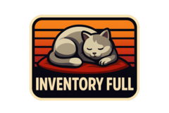

Tipa digs into Dominus Automa’s promise of a hands-off “idle MMO,” but finds an invite-only, single-player slice today—still, the FF12-style automation tinkering sounds genuinely fun.
CrazyKinux lays out EVE Online “stop being broke forever” basics—bank often, don’t die with loot, fly cheap—then maps five starter ISK tracks like exploration, mining, missions+salvage, and hauling.
Frostilyte tries Mysticat’s Bobo’s Big Tower demo: classic Rogue-style turn-based dungeon crawling with Zelda/Necrodancer vibes, where combat feels like puzzles and exploring for keys keeps runs tense

Bhagpuss, 90 hours deep in Baldur’s Gate 3, hits Act II’s end and wonders if it’s just too long—plus some hilarious regret over making the ominous Guardian a gnome in a ball gown.
Wes shifts ROM’s usual vibe into a big interview with Taki Udon on the PlayStation-styled MiSTer FPGA SuperStation One—covering iteration, manufacturing logistics, and software headaches.
Infinitron spotlights The Fortress: a gothic, procedurally generated, turn-based dungeon crawler where dice-based class builds and tough choices drive endless-cycle escape attempts from a lich’s cit
Tofutush loves Blue Prince’s mysteries and puzzles but bounces off the random room drafting and resource limits, then falls down YouTube rabbit holes and finally turns to mods for unlimited everything
Anarchae shares their birth control journey—suspected endometriosis, rough teen periods, then NuvaRing (eventually continuous use) and how skipping periods was genuinely life-changing for pain, mood,
Wilhelm rounds up recent watches, raving hard about Death by Lightning’s late-1800s presidential politics and side-eyeing Landman season 2’s rich-people focus—saved mainly by Billy Bob Thornton.
Tim Bray releases Quamina 2.0.0 with regular expressions, notes some performance regressions from epsilon transitions, and muses about benchmarking in Go (maybe b.Loop) plus writing more practical fin
Dave Winer flags standard.site as an AT Proto writing-format alliance, worries it’s “web-in-a-silo” vs RSS, and also ships a new home page for the Scripting News podcast.
Pixel One’s field journal hits cozy exploration beats—touring Embercoast Reach with Tocho, falling for a cliffside house by the Four Sisters waterfall, and plotting renovations while Stargrace picks a